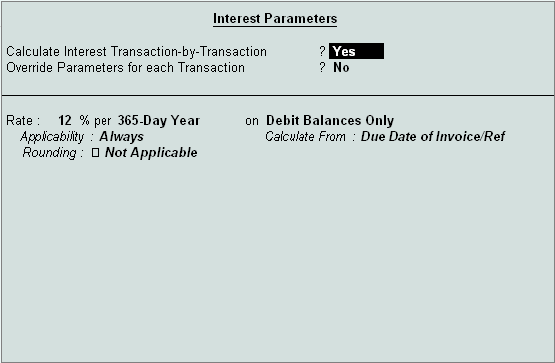

Interest Calculations
Tally.ERP 9 provides a powerful capability to calculate interest on outstanding balance amounts and outstanding bills/invoices/ transactions (Receivables and payables) or on any delayed payments so on.
The Activate Interest Calculation field is displayed in the Ledger Creation screen only, if Activate Interest Calculations is set to yes in F11: Accounting Features. Set this field to yes for each specific ledger account for which interest is to be calculated.
Step 1: Enable Interest Calculation
# In F11: Accounting Features, set parameter Activate Interest Calculation (use advanced parameters) to Yes
Step 2: Enable Ledger for Interest Calculation Go to Gateway of Tally > Accounts Info->Ledger-> Alter.
# Select a ledger for which interest calculation has to be activated.
# Set Activate Interest Calculation to Yes (Set this field to Yes for each specific ledger account for which interest is to be calculated.
# Specify information regarding Rate of interest (%) and Style as per requirements

To view Interest Calculation Report, Go to Gateway of Tally > Display > Statements of Accounts > Interest Calculations > Receivables / Payables/Ledger